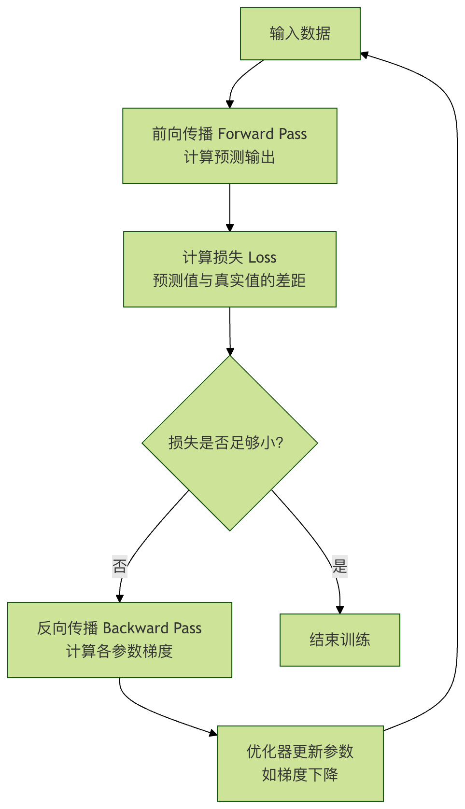

順伝播と逆伝播
深層学習において、順伝播と逆伝播はその動作を支える二大核心的な柱です。それらはまるで一枚のコインの表裏のように、ニューラルネットワークの学習から応用までの完全なサイクルを構成しています。この二つのプロセスを深く理解することは、深層学習の扉を開く最初の鍵です。
この記事では、一見複雑に見えるこれらの概念を段階的に分解し、明確な論理と生き生きとした比喩を用いて、単に「何がそうなるか」だけでなく「なぜそうなるのか」まで理解できるようにします。
順伝播と逆伝播とは？
詳細に入る前に、まず全体像を把握しましょう。
想像してみてください。あなたが子どもに猫と犬の見分け方を教えているとします。その子に画像（入力）を見せます。彼は自分の頭の中にある知識（ネットワークのパラメータ、すなわち重みとバイアス）に基づいて判断し、これは猫だとあなたに伝えます（出力）。この「画像を見る → 脳が処理する → 答えを出す」というプロセスが、順伝播。
です。しかし、子どもの判断は間違うかもしれません。あなたは「違うよ、これは犬だよ」と教えます。この正しい答えと子どもの答えの差が、誤差です。子どもはこの誤差に基づいて振り返って考える必要があります。「私の脳の中のどの知識（パラメータ）が今回の誤判断を引き起こしたのだろう？次回は正しく認識できるように、それらをどう調整すればよいのだろう？」と。この誤差に基づいて、後ろから前へ知識を調整していくプロセスが、逆伝播。
です。ニューラルネットワークでは：
- 順伝播：データが入力層から隠れ層を経て最終的に出力層に到達し、予測結果を生成するプロセスです。これは推論プロセスです。
- 逆伝播：順伝播で生成された予測結果と真の値との間の誤差に基づいて、出力層から逆方向に各パラメータ（重みとバイアス）が総誤差に与える「貢献」の大きさ（すなわち勾配）を層ごとに計算し、それに基づいてパラメータを更新します。これは学習プロセスです。

それらの関係は、単純な学習ループの図で表せます：

順伝播：ニューラルネットワークの推論の道
順伝播は、ニューラルネットワークが予測を行うための前向きの経路です。最も単純な3層ニューラルネットワーク（入力層、1つの隠れ層、出力層）を通して理解しましょう。
中核となる概念と計算
住宅価格を予測することを考えます。入力は住宅面積xです。私たちのミニネットワークの構造は次のとおりです：
- 入力層：1つのニューロンが受け取ります
x。 - 隠れ層：1つのニューロンが重み
w1とバイアスb1。 - 出力層：1つのニューロンが重み
w2とバイアスb2を持ち、予測住宅価格を出力しますy_pred。
順伝播の計算は2つのステップに分けられます：
1、隠れ層の計算：入力xと重みw1、バイアスb1を組み合わせ、次に活性化関数（例：Sigmoid、σと表記）を適用し、隠れ層の出力を生成しますa1。
z1 = w1 * x + b1 a1 = σ(z1) = 1 / (1 + exp(-z1))
z1は線形変換の結果です。a1は非線形活性化後の出力であり、これによりネットワークは複雑なパターンを学習する能力を得ます。
2、出力層の計算：隠れ層の出力a1を入力として、出力層の重みw2、バイアスb2と組み合わせ、最終予測y_predを生成します。ここでは簡略化のため、出力層では活性化関数を使用しない（つまり線形出力）と仮定します。
y_pred = w2 * a1 + b2
コード例：順伝播の手動実装
例
def sigmoid(x):
"""Sigmoid激活函数"""
return 1 / (1 + np.exp(-x))
# 初始化网络参数（通常随机初始化，这里为演示指定值）
w1, b1 = 2.0, -1.0 # 隐藏层参数
w2, b2 = 1.5, 0.5 # 输出层参数
def forward_pass(x):
"""执行一次前向传播"""
# 隐藏层计算
z1 = w1 * x + b1
a1 = sigmoid(z1) # 应用激活函数
# 输出层计算
y_pred = w2 * a1 + b2 # 线性输出
# 返回中间结果和最终预测，便于后续理解
return {'z1': z1, 'a1': a1, 'y_pred': y_pred}
# 假设房屋面积为 3（单位：百平方米）
x_input = 3.0
result = forward_pass(x_input)
print(f"输入 x = {x_input}")
print(f"隐藏层线性输出 z1 = w1*x + b1 = {result['z1']:.4f}")
print(f"隐藏层激活输出 a1 = sigmoid(z1) = {result['a1']:.4f}")
print(f"最终预测房价 y_pred = w2*a1 + b2 = {result['y_pred']:.4f}")
出力例：
输入 x = 3.0 隐藏层线性输出 z1 = w1*x + b1 = 5.0000 隐藏层激活输出 a1 = sigmoid(z1) = 0.9933 最终预测房价 y_pred = w2*a1 + b2 = 1.9899
このy_predが面積3の住宅に対するネットワークの予測価格です。しかし、明らかにこの予測値（適当に設定したパラメータに基づく）は、実際の住宅価格とかけ離れている可能性が高いです。この差をどう測り、どう改善するのでしょうか？それには損失関数と次の逆伝播。
損失関数：良し悪しを測るものさし
逆伝播を始める前に、まず予測値y_predと真の値y_trueの間の差を定量化する必要があります。これが損失関数の役割です。
よく使われる損失関数：
- 平均二乗誤差：回帰問題（住宅価格や気温の予測など）に適しています。
Loss = (1/N) * Σ (y_true - y_pred)^2 - 交差エントロピー損失：分類問題（画像分類やスパムメール判定など）に適しています。
平均二乗誤差を例にとると、単一サンプルに対して：
Loss = (y_true - y_pred)^2
私たちの目標は、w1, b1, w2, b2を調整して、このLossの値をできるだけ小さくすることです。
逆伝播：ニューラルネットワークの学習エンジン
逆伝播は深層学習の学習アルゴリズムの中核です。その本質は連鎖律のニューラルネットワークにおける効率的な応用です。目標は損失関数Lの各パラメータ（w1, b1, w2, b2）に対する偏導関数（勾配）、すなわち∂L/∂w1, ∂L/∂b1などを計算することです。これらの勾配は、損失を小さくするために、各パラメータをどの方向に、どの程度の大きさで調整すべきかを示します。
勾配を理解する：山を下る方向と歩幅
目隠しをして山の上に立っていると想像してください（損失曲面）。目標は谷の最も低い点（最小損失）を見つけることです。一歩踏み出す前に、足で周囲の最も急な下り坂の方向を感じ取る必要があります。この最も急な下り坂の方向が勾配です。逆伝播は、足元の各点（各パラメータ群に対応）の勾配を正確に計算するのを助けます。
逆伝播の計算手順（連鎖律）
先ほどのミニネットワークを引き続き使い、真の住宅価格y_true = 2.5とし、損失関数を平均二乗誤差L = (y_true - y_pred)^2。
とします。逆伝播は出力層から始まり、逆方向に層ごとに勾配を計算します：
出力層のパラメータの勾配を計算する
- 損失
Lの予測値に対するy_pred勾配：∂L/∂y_pred = -2 * (y_true - y_pred) - なぜなら
y_pred = w2 * a1 + b2、したがって：∂L/∂w2 = (∂L/∂y_pred) * (∂y_pred/∂w2) = (∂L/∂y_pred) * a1∂L/∂b2 = (∂L/∂y_pred) * (∂y_pred/∂b2) = (∂L/∂y_pred) * 1
隠れ層のパラメータの勾配を計算する
- まず、損失
Lの隠れ層出力a1に対する勾配が必要です。a1を介してy_pred影響します。L：∂L/∂a1 = (∂L/∂y_pred) * (∂y_pred/∂a1) = (∂L/∂y_pred) * w2 - 次に、
a1 = σ(z1)、シグモイド関数の導関数σ'(z) = σ(z)*(1-σ(z))。 - 最後に計算するのは、
L隠れ層パラメータw1,b1に対する勾配です：∂L/∂w1 = (∂L/∂a1) * (∂a1/∂z1) * (∂z1/∂w1) = (∂L/∂a1) * σ'(z1) * x∂L/∂b1 = (∂L/∂a1) * (∂a1/∂z1) * (∂z1/∂b1) = (∂L/∂a1) * σ'(z1) * 1
コード例：逆伝播の手動実装
例
y_true = 2.5
y_pred = result['y_pred']
a1 = result['a1']
z1 = result['z1']
x = x_input
print(f"真实值 y_true = {y_true}")
print(f"预测值 y_pred = {y_pred:.4f}")
print(f"初始损失 Loss = {(y_true - y_pred)**2:.4f}")
print("\n"--- 开始反向传播计算梯度 ---")
# 1. 计算损失对y_pred的梯度
dL_dy_pred = -2 * (y_true - y_pred)
print(f"梯度 ∂L/∂y_pred = -2*(y_true - y_pred) = {dL_dy_pred:.4f}")
# 2. 计算输出层参数 w2, b2 的梯度
dL_dw2 = dL_dy_pred * a1
dL_db2 = dL_dy_pred * 1
print(f"勾配 ∂L/∂w2 = (∂L/∂y_pred) * a1 = {dL_dw2:.4f}")
print(f"勾配 ∂L/∂b2 = (∂L/∂y_pred) * 1 = {dL_db2:.4f}")
# 3. 隠れ層出力a1に対する損失の勾配を計算
dL_da1 = dL_dy_pred * w2
print(f"勾配 ∂L/∂a1 = (∂L/∂y_pred) * w2 = {dL_da1:.4f}")
# 4. z1におけるSigmoid関数の導関数の値を計算
def sigmoid_derivative(x):
"""Sigmoid関数の導関数"""
s = sigmoid(x)
return s * (1 - s)
sigma_prime_z1 = sigmoid_derivative(z1)
print(f"Sigmoid導関数 σ'(z1) = σ(z1)*(1-σ(z1)) = {sigma_prime_z1:.4f}")
# 5. 隠れ層パラメータ w1, b1 の勾配を計算
dL_dw1 = dL_da1 * sigma_prime_z1 * x
dL_db1 = dL_da1 * sigma_prime_z1 * 1
print(f"勾配 ∂L/∂w1 = (∂L/∂a1) * σ'(z1) * x = {dL_dw1:.4f}")
print(f"勾配 ∂L/∂b1 = (∂L/∂a1) * σ'(z1) * 1 = {dL_db1:.4f}")
出力例：
真实值 y_true = 2.5 预测值 y_pred = 1.9899 初始损失 Loss = 0.2602 --- 开始反向传播计算梯度 --- 梯度 ∂L/∂y_pred = -2*(y_true - y_pred) = -1.0202 梯度 ∂L/∂w2 = (∂L/∂y_pred) * a1 = -1.0134 梯度 ∂L/∂b2 = (∂L/∂y_pred) * 1 = -1.0202 梯度 ∂L/∂a1 = (∂L/∂y_pred) * w2 = -1.5303 Sigmoid导数 σ'(z1) = σ(z1)*(1-σ(z1)) = 0.0066 梯度 ∂L/∂w1 = (∂L/∂a1) * σ'(z1) * x = -0.0304 梯度 ∂L/∂b1 = (∂L/∂a1) * σ'(z1) * 1 = -0.0101
これで、すべてのパラメータの勾配が得られました。これらの負の値は、もしこれらのパラメータの値を増加させると、損失は増大することを意味します（勾配の方向は上昇方向であるため）。損失を減らすには、私たちは勾配の逆方向に沿ってパラメータを調整する必要があります。
パラメータ更新：勾配降下法
勾配を得た後、私たちは勾配降下法アルゴリズムを使用してパラメータを更新します：
パラメータ = パラメータ - 学習率 * そのパラメータの勾配
ここで、学習率は非常に重要なハイパーパラメータであり、各パラメータ更新のステップ幅を制御します。ステップ幅が小さすぎると学習が遅く、大きすぎると収束しないか発散する可能性があります。
コード例：勾配降下法を適用してパラメータを更新する
例
# パラメータを更新
w1_new = w1 - learning_rate * dL_dw1
b1_new = b1 - learning_rate * dL_db1
w2_new = w2 - learning_rate * dL_dw2
b2_new = b2 - learning_rate * dL_db2
print("--- 更新後のパラメータ ---")
print(f"w1: {w1:.4f} -> {w1_new:.4f}")
print(f"b1: {b1:.4f} -> {b1_new:.4f}")
print(f"w2: {w2:.4f} -> {w2_new:.4f}")
print(f"b2: {b2:.4f} -> {b2_new:.4f}")
# 新しいパラメータで順伝播を1回行い、損失が減少したかどうかを確認
def forward_pass_with_params(x, w1, b1, w2, b2):
z1 = w1 * x + b1
a1 = sigmoid(z1)
y_pred = w2 * a1 + b2
return y_pred
y_pred_new = forward_pass_with_params(x_input, w1_new, b1_new, w2_new, b2_new)
loss_new = (y_true - y_pred_new)**2
print(f"\n新しいパラメータで予測: y_pred_new = {y_pred_new:.4f}")
print(f"更新後の損失 New Loss = {loss_new:.4f}")
print(f"損失の変化: {loss_new - (y_true-y_pred)**2:.4f} (負の値は損失の減少を意味します)")
出力例：
--- 更新后的参数 --- w1: 2.0000 -> 2.0030 b1: -1.0000 -> -0.9990 w2: 1.5000 -> 1.6013 b2: 0.5000 -> 0.6020 用新参数预测: y_pred_new = 2.1933 更新后的损失 New Loss = 0.0940 损失变化: -0.1662 (负值表示损失减小)
素晴らしい！一度の順伝播 -> 損失の計算 -> 逆伝播 -> 勾配降下法による更新という完全なサイクルを経て、私たちの予測値はy_pred 从 1.99より真の値に近づき2.5、損失も0.260減少しました0.094。このサイクルを何千回、何万回と繰り返すことで（大量のデータに対して）、ニューラルネットワークは有効なパラメータを学習し、正確な予測を行うことができます。
実践演習：理解を深める
さあ、学んだ知識を定着させるために、実際に手を動かす時です。
演習 1：ネットワークを拡張する上記のコードを変更して、隠れ層ニューロンを2個に増やします。初期化する必要があるのは、w1形状が(2,)の配列（2つの重み）、b1 为 (2,)の配列です。それに応じて、順伝播と逆伝播の計算を調整してください。ネットワークの能力の変化を観察しましょう。
演習 2：活性化関数を変更するSigmoid活性化関数をReLU関数に置き換えます（f(x) = max(0, x)）。ReLUの導関数を再導出して実装する必要があります（f'(x) = 1 if x>0 else 0）。異なる活性化関数を使用した場合のトレーニングプロセスの違いを比較してください。
演習 3：トレーニングループを実装する完全なトレーニングループを記述し、何らかの単純なデータセット（例えば、自分で構築したy = 2x + 1 + 噪声データ）上で、小さなネットワークを訓練してそれに適合させます。エポック数を設定し、各反復の後に損失を出力し、損失がトレーニングとともに継続して減少するかどうかを観察してください。
演習 4：学習率の影響を理解する演習3に基づいて、さまざまなlearning_rate学習率（例：0.01, 0.1, 0.5, 1.0）を試してみてください。学習率が大きすぎる場合や小さすぎる場合の損失曲線の変化（振動するか、発散するか、収束が遅いか）を観察し、学習率がステップ幅として重要であることを深く理解してください。
まとめ
順伝播と逆伝播は、ニューラルネットワーク学習の中核となるダイナミクスです：
- 順伝播は是推論経路であり、現在のパラメータを使用して入力を出力にマッピングし、現在のパフォーマンスのスコア（損失）を計算します。
- 逆伝播は是学習アルゴリズムであり、連鎖律を利用して、ネットワーク内の各パラメータに対する損失関数の勾配を効率的に計算し、パラメータ最適化の方向を示します。
- 勾配降下法は是最適化戦略であり、逆伝播によって提供された勾配に基づき、学習率をステップ幅としてパラメータを実際に更新し、ネットワークのパフォーマンスを段階的に改善します。
クリックしてノートを共有
ノートは本記事の内容を拡張したものである必要があります！
記事の投稿は、こちらをクリックしてください
登録招待コードの取得方法
ノートを共有する前にログインが必要です！
登録招待コードの取得方法